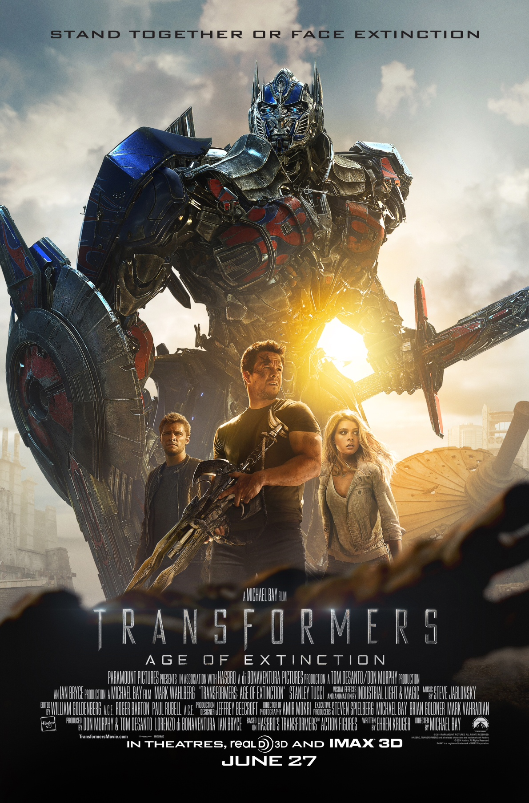

Transformers: A Era da Extinção
Transformers: Age of Extinction Ação , Aventura (2014)
Realizador:
Ehren KrugerDiretor:
Michael BayActores:
Mark Wahlberg, Nicola Peltz, Jack Reynor,
Sinopse
Alguns anos após o grande confronto entre Autobots e Decepticons em Chicago, os gigantescos robôs alienígenas desapareceram. Eles são atualmente caçados pelos humanos, que não desejam passar por apuros novamente. Quando Cade (Mark Wahlberg) encontra um caminhão abandonado, ele jamais poderia imaginar que o veículo é na verdade Optimus Prime, o líder dos Autobots. Muito menos que, ao ajudar a trazê-lo de volta à vida, Cade e sua filha Tessa (Nicola Peltz) entrariam na mira das autoridades americanas.
Comentários